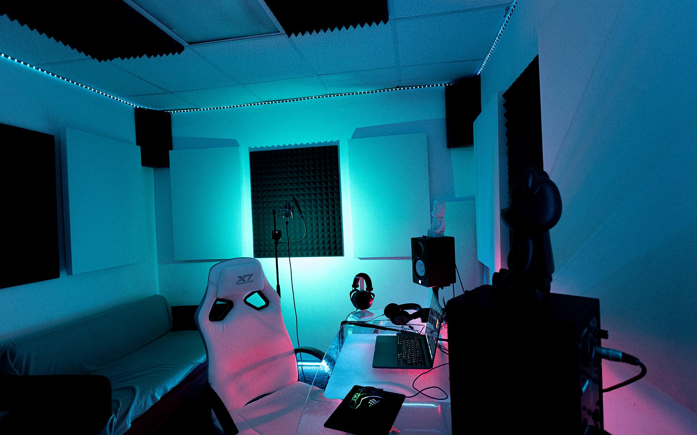
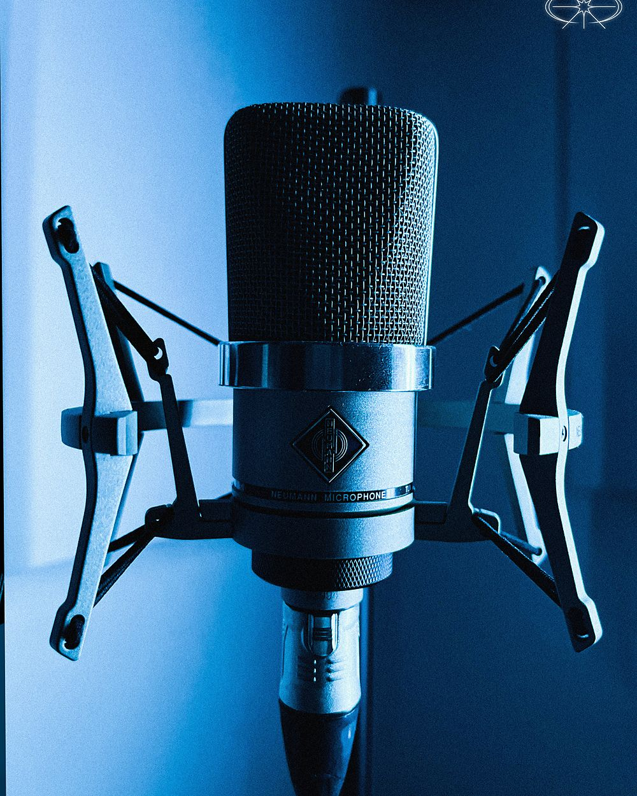
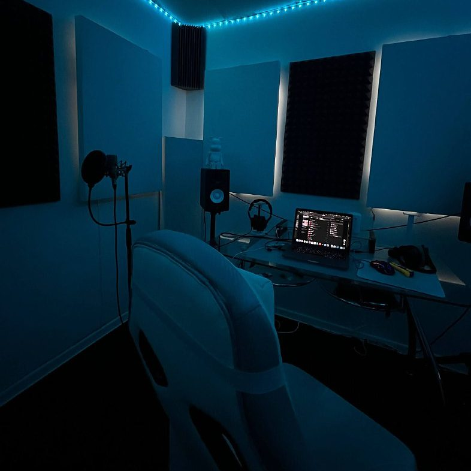
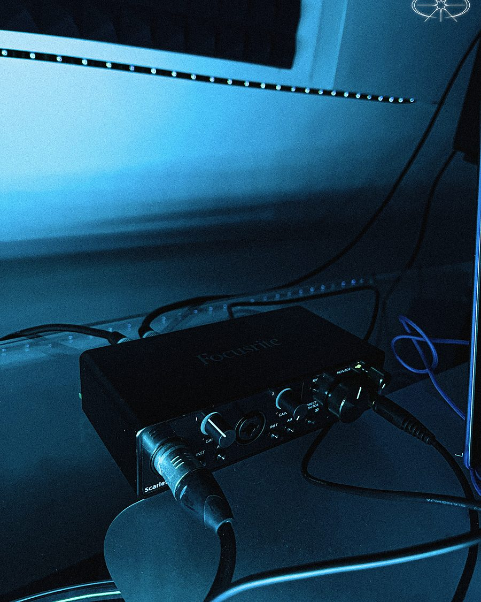
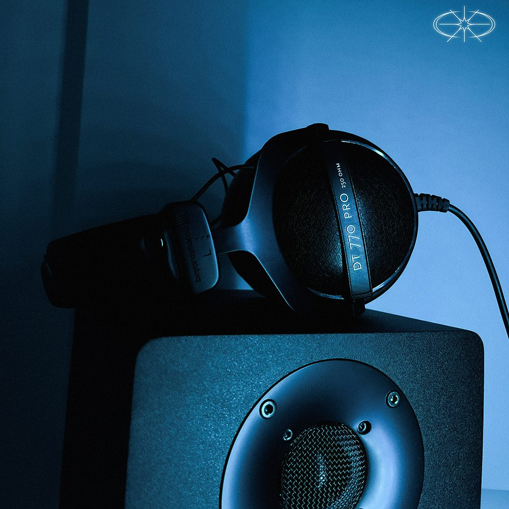
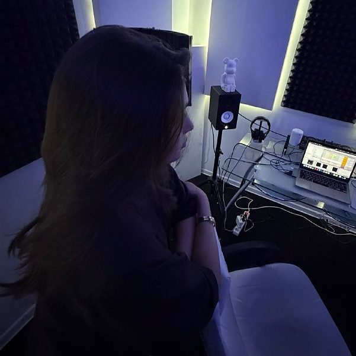
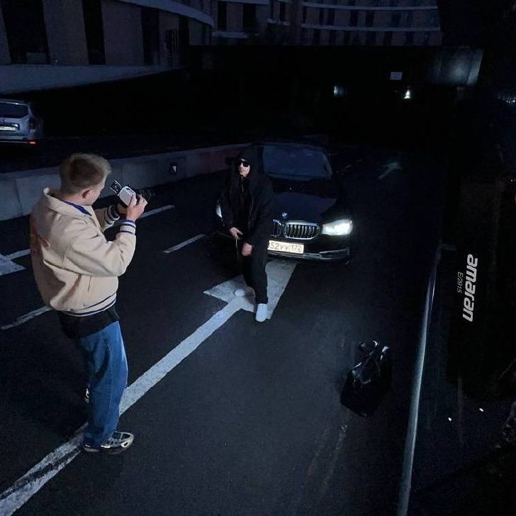
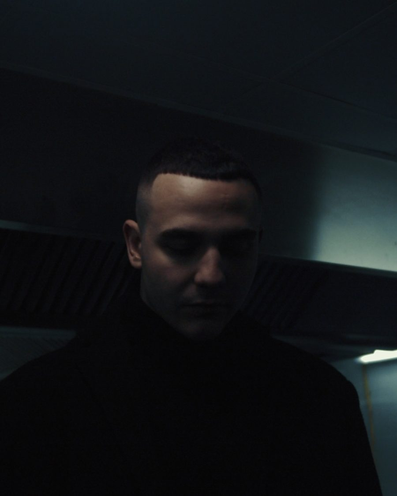
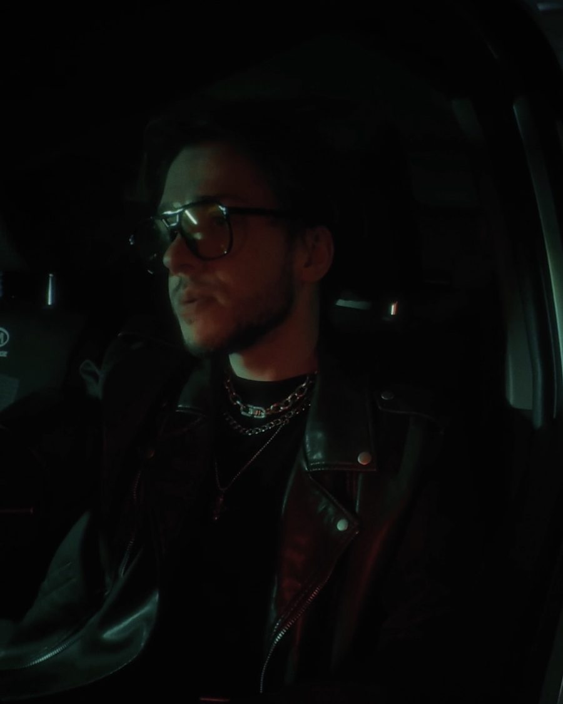
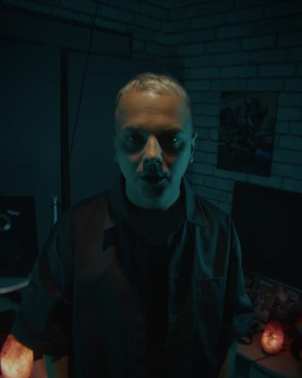

I
Запись вокала
- Час со звукорежиссёромот 990 ₽
- Ночная сессия, час1 500 ₽
Эффекты идут в наушники сразу — слышно, как будет звучать, а не приходится это представлять.

5.0 · 29 отзывов на Яндекс.Картах · Тюмень
Запись вокала, сведение, биты и съёмка клипов. Тюмень, Сакко 21 — круглосуточно, по записи.
01 — О студии
Студия в центре Тюмени, на Сакко. Здесь трек проходит весь путь: бит, запись, сведение, мастеринг, клип. Собирать релиз по кускам у разных людей не придётся.
Работаем круглосуточно, по записи. Ночью в студии спокойнее всего — многие берут именно ночные сессии.
Название дерзкое, атмосфера — нет. Пишутся и те, кто в теме десять лет, и те, кто первый раз надел наушники. Роман разберётся, что вы хотите услышать, и поможет это вытащить: подскажет по подаче, добьёт бэки, объяснит, почему в мониторах звучит не так, как звучало в голове.

02 — Услуги
Точную стоимость подтверждаем при записи: зависит от объёма и тайминга.
I
Эффекты идут в наушники сразу — слышно, как будет звучать, а не приходится это представлять.
II
Сводим вокал с битом: баланс, эквалайзер, компрессия, пространство и эффекты — чтобы голос сидел в миксе, а не лежал поверх него. Мастеринг добавляет плотность и выводит громкость под стриминги, чтобы трек одинаково звучал в наушниках, в машине и в колонке телефона. Отдаём WAV и MP3, по запросу — со стемами.
III
Хип-хоп, R&B, поп, лоу-фай, электроника. Можно принести референс, можно — только идею.
IV
Ведёт Анастасия. Постановка голоса, дыхание, работа с микрофоном.
V
Репетиции, подкасты, свои сессии. Тайминг гибкий, время — любое.
VI
Монтаж и цвет уже внутри. Вертикаль под соцсети, горизонталь под YouTube.
VII
Выложим трек в стриминги и подадим в плейлисты и промо-каналы.
Не нашли свой формат? Напишите в Telegram или позвоните +7 (922) 062-64-64 — придумаем, как сделать.
03 — Работы
Треки, записанные и сведённые здесь, и клипы с наших съёмок.





Свежее выкладываем в канале t.me/narcosrec72 и во ВКонтакте.
04 — Команда

Звукорежиссёр
Записывает и сводит. В отзывах благодарят чаще всего именно его — за то, что не торопит и объясняет, что вообще происходит со звуком.
Помогает с бэками и подбирает обработку под голос.
Преподаватель вокала
Ведёт уроки вокала: постановка голоса, дыхание, работа с микрофоном.
Занимается и с теми, кто готовится к первой записи, и с теми, кто хочет вытянуть партию посложнее.

Битмейкер
Пишет биты под задачу и делает аранжировки. Хип-хоп, R&B, поп, лоу-фай, электроника.
Можно прийти с референсом, можно — с одной идеей в голове.

Видеограф
Снимает клипы, сниппеты, рекламу и вертикалку под соцсети. Монтаж и цвет — тоже на нём.
Снять можно сразу после записи, не выходя из студии.
05 — Отзывы
О чём чаще всего пишут клиенты. Пересказ, не дословно.
Называют лучшей студией в городе — приходят за звуком и возвращаются.
Пишут, что здесь записываются и приезжающие в Тюмень известные исполнители.
Отмечают индивидуальный подход: слушают задачу, а не гонят по шаблону.
Хвалят помощь с бэками и звучанием — подсказывают, где добавить, где убрать.
Отдельно — про скорость сведения и про то, что в студии просто тепло и по-человечески. На первой записи это важнее, чем кажется.
06 — Контакты
Если карта не грузится — открыть карточку студии на Яндекс.Картах